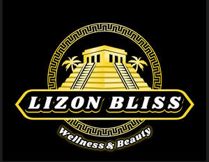

Trade Mark Journal No.2025/011 14 March 2025
UK00004166741 28 February 2025 (3,5)

- Class 3
- Skin care cosmetics; Skin care oils [cosmetic]; Skin care creams, other than for medical use; Skin care oils [non-medicated]; Skin care preparations; Skin care lotions [cosmetic]; Exfoliants for the care of the skin; Skin care (Cosmetic preparations for -); Cosmetic preparations for skin care; Skin care creams [cosmetic]; Cosmetic creams for skin care; Skin care products for animals; Cleansing milks for skin care; Essences for skin care; Non-medicated skin care preparations; Cosmetic products in the form of aerosols for skin care; Skin care mousse; Body care cosmetics; Hair care lotions [for cosmetic use]; Hair care creams; Hair care lotions; Perfumed oils for skin care; Milky lotions for skin care; Hair care serum; Hair care serums; Cosmetic preparations for body care; Wrinkle removing skin care preparations; Cosmetic hair care preparations; Beauty creams for body care; Horse oil cream for skin care; Hair care preparations; Sun care lotions [for cosmetic use]; Cosmetics for use in the treatment of wrinkled skin; Skin, eye and nail care preparations; Sets of cosmetic oral care products; Non-medicated body care preparations; Beauty care cosmetics; Beauty lotions; Beauty serums; Beauty creams; Beauty serums with anti-ageing properties; Hair care creams [for cosmetic use]; Beauty care preparations; Body cleaning and beauty care preparations; Distilled oils for beauty care; Cosmetics for the treatment of dry skin; Skin moisturizers used as cosmetics; Sun care preparations for cosmetic use; Deodorants for body care; Eye care products, non-medicated; Skin relief serum [cosmetic]; Lotions for face and body care; Sun care lotions; Skin cleansers [cosmetic]; Hair care masks; Facial care preparations; Oil baths for hair care; Oils for the skin; Mineral oils [cosmetic]; Body oils [for cosmetic use]; Cosmetic oils for the epidermis; Tissues impregnated with essential oils, for cosmetic use; Body oil [for cosmetic use]; After-sun oils [cosmetics]; Cosmetic sun oils; Natural oils for cosmetic purposes; Cosmetics in the form of oils; Suntan oils [cosmetics]; Preparations for the care of the body; Anti-aging serum for cosmetic use.
- Class 5
- Dietary supplements; Dietary and nutritional supplements; Dietary food supplements; Dietary supplements for medical use; Dietary supplements for infants; Dietary supplements for pets; Medicinal creams for skin care; Dietary supplements for animals; Dietary supplements with a cosmetic effect; Propolis dietary supplements; Liquid dietary supplements; Zinc dietary supplements; Mineral dietary supplements; Glucose dietary supplements; Health food supplements for persons with special dietary requirements; Flaxseed dietary supplements; Skin care creams for medical use; Dietary supplements for humans; Mineral dietary supplements for animals; Dietary supplements and dietetic preparations; Lecithin dietary supplements; Herbal dietary supplements for persons special dietary requirements; Pharmacological preparations for skin care; Chlorella dietary supplements; Albumin dietary supplements; Pollen dietary supplements; Nutritional supplements; Skin care (Pharmaceutical preparations for -); Pharmaceutical preparations for skin care; Enzyme dietary supplements; Nutraceuticals for use as a dietary supplement; Pharmaceutical preparation for skin care; Mineral dietary supplements for humans; Alginate dietary supplements; Protein dietary supplements; Skin care preparations for medical use; Linseed dietary supplements; Skin care oils [medicated]; Pharmaceutical products for skin care for animals; Medicated skin care preparations; Skin care lotions [medicated]; Dietary supplements for controlling cholesterol; Yeast dietary supplements; Health food supplements made principally of vitamins; Dietary supplements consisting of vitamins; Flaxseed oil dietary supplements; Natural dietary supplements for treating claustrophobia; Casein dietary supplements; Wheat dietary supplements; Reconstituted cells for medical treatments for skin care; Acai powder dietary supplements; Mineral nutritional supplements; Liquid nutritional supplements; Vitamin preparations in the nature of food supplements; Anti-oxidant food supplements; Nutritional supplements for veterinary use; Dietary supplements for humans not for medical purposes; Dietary and nutritional preparations; Protein powder dietary supplements; Folic acid dietary supplements; Dietary supplements in powder form; Soy protein dietary supplements; Vitamin and mineral supplements for pets; Vitamin and mineral food supplements; Dietary supplements for human beings; Linseed oil dietary supplements; Vitamin supplements for animals; Soy isoflavone dietary supplements; Dietary supplements and dietetic preparations containing CBD oil; Food supplements for dietetic use; Reconstituted cells for clinical treatments for skin care; Vitamin supplements; Food supplements; Dietary supplements promoting fitness and endurance; Dietary pet supplements in the form of pet treats; Dietary food supplements used for modified fasting; Dietary supplement drinks; Royal jelly dietary supplements; Pine pollen dietary supplements; Anti-oxidants for dietary use; Health food supplements made principally of minerals; Whey protein dietary supplements; Brewer's yeast dietary supplements; Dietary supplements for pets in the nature of a powdered drink mix; Food supplements for medical purposes; Medicated food supplements; Nutritional supplements for livestock feed; Medicinal creams for the protection of the skin; Wheat germ dietary supplements; Vitamin supplements for use in renal dialysis; Preparations for cleansing the skin for medical use; Medicated hair care preparations; Liquid vitamin supplements; Herbal supplements; Vitamin and mineral supplements; Probiotic supplements; Homeopathic supplements; Anti-oxidant supplements; Dietary supplement drink mixes; Bee pollen for use as a dietary food supplement; Protein supplements; Calcium supplements; Prebiotic supplements; Food supplements for sportsmen; Dietary supplements consisting primarily of magnesium; Dietary supplements consisting primarily of calcium; Nutritional supplement energy bars; Ground flaxseed fiber for use as a dietary supplement; Activated charcoal dietary supplements; Food supplements for veterinary use; Dietary supplements for human beings and animals; Liquid herbal supplements; Fitness and endurance supplements; Nutritional supplements consisting of fungal extracts; Dietary supplements consisting primarily of iron; Nutritional supplements consisting primarily of magnesium; Dietary supplemental drinks; Fiber (Dietary -); Dietary fiber; Nutritional supplements consisting primarily of calcium; Antibiotic food supplements for animals; Food supplements for non-medical purposes; Fibre (Dietary -); Dietary fibre; Health-aid foods supplements containing ginseng; Colostrum supplements; Calcium tablets as a food supplement; Food supplements in liquid form; Protein supplements for animals; Ganoderma lucidum spore powder dietary supplements; Nutritional supplements consisting primarily of zinc; Mineral supplements for feeding livestock; Powdered fruit-flavored dietary supplement drink mix; Powdered nutritional supplement drink mix; Nutritional supplements consisting primarily of iron; Powdered nutritional supplement energy drink mix; Nutritional supplement meal replacement bars for boosting energy; Nutritional supplements made of starch adapted for medical use; Dietetic and nutritional preparations; Dietetic foods for use in clinical nutrition; Dietary fiber to aid digestion; Vitamin supplement patches; Pharmaceutical preparations for hair care; Preparations for supplementing the body with essential vitamins and microelements.
Lizon Bliss Ltd